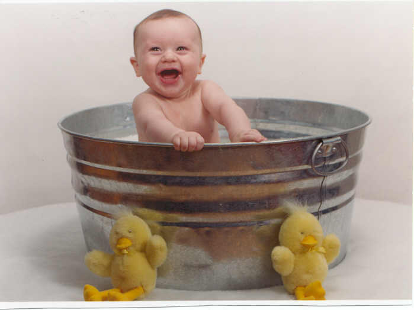
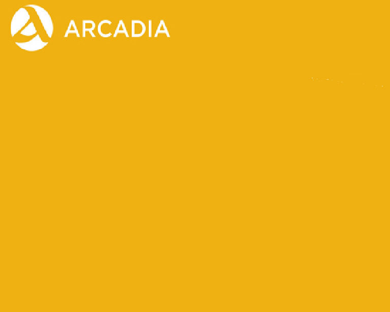
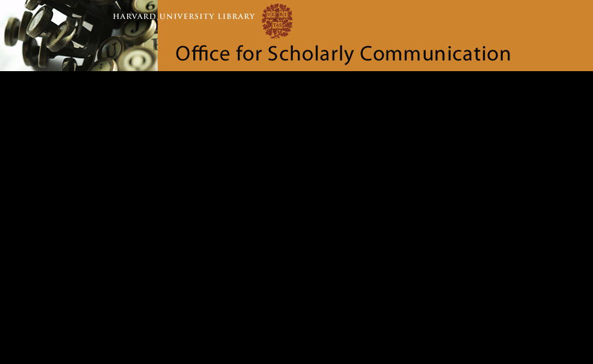
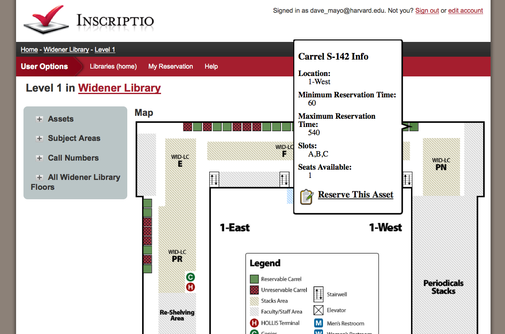

"Every tub on its own bottom"
This is why we can't have nice things.
unless...
We get grant funded!
Harvard Library Lab
osc.hul.harvard.edu/ liblab
Lots of neat projects that librarians actually want!

- Do We Own this?
- inscriptio (carrel reservations)
- Class Request Tool
- Link-o-matic
- Course Reserves Unleashed!
- PDS Mobile Web API
...some of it even in github!
github/ harvard-library
github/ cgoines/ doweown
Bobbi Fox
Library Technology Services, Harvard University
bobbi_fox@harvard.edu
@bobbi_fox_SMR
h/t John Fink for publicizing Big, and @tmcw for writing it.